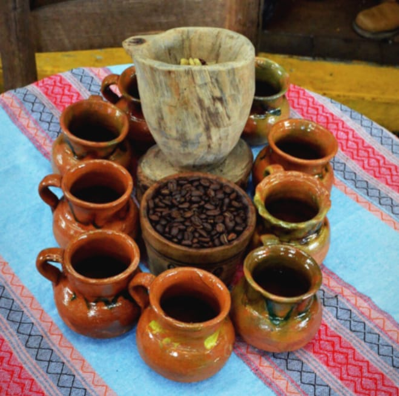

El Cafe De Veracuz
El café de Veracruz es una denominación de origen (DO) que regula y protege el café (Coffea arabica) producido en el estado de Veracruz, en el oriente mexicano. Predominan las variedades de café Bourbon, Caturra, Garnica, Mundo Novo y Typica.[1] Se trata de un café de alta acidez, sabor especiado y con cuerpo, y aroma intenso.
Llegada Del cafe
El café llegó a esta área durante el siglo xviii, época de mayor esplendor del puerto de Veracruz; por este puerto llegaban a Nueva España gran cantidad de productos traídos del Viejo Mundo, entre ellos el café.[3] La fertilidad de los suelos volcánicos, el clima tropical de montaña y la abundancia de recursos hidráulicos hizo de las tierras veracruzanas lugar idóneo para la plantación de extensos cafetales.[4] Hoy en día, el café está fuertemente ligado a la identidad cultural veracruzana y a su tradición gastronómica.[5]
Hoy En Dia
El café de Veracruz es una de las 16 denominaciones de origen mexicanas desde el 19 de mayo del año 2000,[6] y es el Consejo Regulador del Café Veracruz A.C. la principal institución que encargada de su control y manejo. Junto con el café de Chiapas, son las dos únicas denominaciones para café en toda la república. Abarca una extensión de ~145.000 ha de cafetales,[7] en un total de 82 municipios, en alturas que rondan los 600 hasta los 1.400 m s. n. m.[1]
Introducido
El café llegó al territorio mexicano desde las Antillas vía el puerto de Veracruz, y posiblemente se sembró por primera vez en la región olmeca de Acayucan.[8] Existen, sin embargo, diferentes versiones sobre cuándo llegó el café a México; Se cree que fue introducido en los años 1740 por comerciantes franceses, quienes lo importaron desde la isla de Martinica,[9] aun hoy colonia francesa. Otra teoría dice que fue Don Juan Antonio Gómez de Guevara, conde de Oñate de origen español quien trajo desde Cuba una planta de café y la plantó en su Hacienda de Guadalupe,[10] situada en la localidad de Amatlán de los Reyes, quince minutos al sur de Córdoba. Según algunas fuentes esto ocurrió en 1796,[10] mientras que otras indican 1804.[11] En 1803, Alexander von Humboldt visita Nueva España y reporta que la producción es nula y el uso de café es raro, ya que apenas «se consumen anualmente entre cuatrocientos y quinientos quintales
Hablando Un poco mas del cafe del dia

».[12] Hoy en día, más de dos siglos después, la Ex Hacienda de Guadalupe sigue en pie y activa, y es visitable como lugar de interés turístico e histórico.[11] En aquella época, el cultivo del café no fue un gran éxito, pero se acabaría expandiendo desde Veracruz a otras regiones, principalmente Chiapas, Puebla y Oaxaca. Veracruz fue, no obstante, el principal productor de café mexicano hasta la primera mitad del siglo xx.[13] En 1803 se realizaría la primera exportación del grano: 210 sacos rumbo a España, poco antes de la independencia de México (1810-1821).[13] Al igual que el tabaco o la caña de azúcar